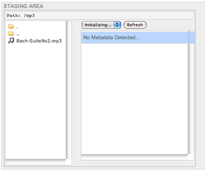
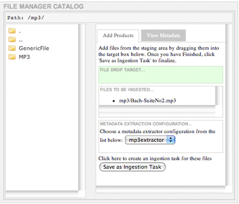

Project Documentation
Software Documentation
- Basic User's Guide
- Advanced User's Guide
- REST API Guide

This document serves as a basic user's guide for the CAS-Curator project. The goal of the document is to allow users to check out, build, and install the base version of the CAS-Curator, as well as perform basic configuration tasks. For advanced topics, such as customizing the look and feel of the CAS-Curator for your project, please see our Advanced Guide.
The remainder of this guide is separated into the following sections:
The most recent CAS-Curator project can be downloaded from the OODT website or it can be checked out from the OODT repository using Subversion. The We recommend checking out the latest released version (v1.0.0 at the time of writing).
Maven is the build management system used for OODT projects. We currently support Maven 2.0 and later. For more information on Maven, see our Maven Guide.
Assuming a *nix-like environment, with both Maven and Subversion clients installed and on your path, an example of the checkout and build process is presented below:
> mkdir /usr/local/src
> cd /usr/local/src
> svn checkout http://oodt/repo/cas-curator/tags/1_0_0_release \
cas-curator-v1.0.0
After the Subversion command completes, you will have the source for the CAS-Curator project in the /usr/local/src/cas-curator-v1.0.0 directory.
In order to build the WAR (Web ARchive) file from this source, issue the following commands:
> cd /usr/local/src/cas-curator-v1.0.0
> mvn package
Once the Maven command completes successfully, you should have a target directory under cas-curator-v1.0.0/. The WAR file, called cas-curator-1.0.0.war, can be found under target/.
In the next section, we will discuss deploying this WAR file to a Tomcat instance.
Once you have built a war file, it is necessary to deploy the web application using a servlet container such as Tomcat or Jetty. For the purposes of this guide, we will assume that you are using Tomcat. Tomcat can be installed in a user account or at the system level. The base configuration launches a web server on port 8080. You can learn more about Tomcat and download the latest release from their website. NOTE: There are two concurrent versions of Tomcat: 5.5.X and 6.0.X. CAS-Curator is compatible with both versions.
We will assume that you have downloaded Tomcat to an appropriate directory, are using the default configuration, and have taken the appropriate steps to allow access to port 8080. See your System Administrator is you have any questions about firewall security and policy regarding port access. We will further assume that you have set an environment variable, $TOMCAT_HOME, to the base directory of your Tomcat installation.
There are a number of ways to deploy a WAR file to Tomcat, though we recommend using a context file. A context file is a XML file that provides Tomcat with "context" for using a particular web application. In order to create a context file for the CAS-Curator, open your favorite text editor and copy and paste the following:
<Context path="/my-curator"
docBase="/usr/local/src/cas-curator-v1.0.0/target/cas-curator-1.0.0.war">
<Parameter name="org.apache.oodt.security.sso.implClass"
value="org.apache.oodt.security.sso.DummyImpl"/>
<Parameter name="org.apache.oodt.cas.curator.projectName"
value="My Project"/>
</Context>
Save the context file to $TOMCAT_HOME/conf/Catalina/localhost/my-curator.xml. Now you can point a web browser to http://localhost:8080/my-curator and you should see a log-in screen for CAS-Curator. Note: Tomcat will only use the path attribute if the context is defined in server.xml. Tomcat uses the xml file name instead. See the Tomcat documentation for further information

The org.apache.oodt.security.sso.implClass parameter that we set in the context file configures the CAS-Curator for a "dummy" log-in to its Single Sign On service. Because of this, we are able to log into the web application with a blank user name and a blank password. For help in implementing security with CAS-Curator, see our Advanced Guide.

In the next sections, we will talk about setting up staging areas, metadata extractors, and launching a CAS-Filemgr instance into which CAS-Curator will ingest data products.
Staging areas are directories on your local machine that hold data products to be curated. The staging area can have arbitrary structure. The only requirement that CAS-Curator has with regard to this structure is that the directory structure be mirrored in a metadata generation area. This generation area is used by CAS-Curator to create metadata files to associate with data products.
For example, if there is a product, say an MP3 file of Bach's Der Geist hilft unsrer Schwachheit auf, in the staging area at:
[staging_area_base]/audio/classical/bach/Der_Geist_hilft.mp3
Then the CAS-Curator will generate all associated metadata products in [metadata_gen_base]/audio/classical/bach/.
In order to set up the staging area and the metadata generation area, we first create base directories for each, shown below:
> mkdir /usr/local/staging
> mkdir /usr/local/staging/products
> mkdir /usr/local/staging/metadata
Next, we will set the following parameters in the CAS-Curator context file:
<Parameter name="org.apache.oodt.cas.curator.stagingAreaPath"
value="/usr/local/staging/products"/>
<Parameter name="org.apache.oodt.cas.curator.metAreaPath"
value="/usr/local/staging/metadata"/>
<Parameter name="org.apache.oodt.cas.curator.metExtension"
value=".met"/>The org.apache.oodt.cas.curator.stagingAreaPath parameter should be set to the product staging area and the org.apache.oodt.cas.curator.metAreaPath should be set to the metedata generation area. Additionally, we specified the parameter org.apache.oodt.cas.curator.metExtension to be .met. This parameter specifies the extension for all of the metadata files produced in the metadata generation area.
For illustrative purposes, we will load an mp3 file into the staging area:
> mkdir /usr/local/staging/products/mp3
> cd /usr/local/staging/products/mp3
> curl -LO http://oodt.apache.org/components/maven/curator/media/Bach-SuiteNo2.mp3
We should note that this music file was produced by the Fulda Symphonic Orchestra and is freely distributed under the EFF Open Audio License, version 1.0. We have edited the ID3 tag of this file (in order to make the later metadata extraction example more interesting), but original authorship is retained. Now back to the tutorial...
Remember that we need to mirror the product staging area and the metadata generation area, so will also need to create the matching directory structure there:
> mkdir /usr/local/staging/metadata/mp3
Once you restart Tomcat, the changes you have made to the context file will be used. The staging area will now be set to /usr/local/staging/products. See the screenshot below:
Double-clicking on "mp3", we can see that the staging area path in the top left is now /mp3 and Bach-SuiteNo2.mp3 can be seen the main left staging pane. For the time-being, there is no metadata detected (as reported in the main right staging pane), but in the next section, we will be setting up a basic, command-line metadata extractor in order to show how extractors are integrated into CAS-Curator.
The CAS-Curator uses ancillary programs called metadata extractors to produce the metadata that it associates with products. More information about metadata extractors can be found in the Extractor Basics User's Guide.
Like the staging area, we first need to set up an area in the file system for metadata extractors. We will call this directory extractors:
> mkdir /usr/local/extractors
In order to register the metadata extractor path with the CAS-Curator, we will need to add another parameter to the web application's context file. Add the following parameter:
<Parameter name="org.apache.oodt.cas.curator.metExtractorConf.uploadPath"
value="/usr/local/extractors" />
We are going to make a metadata extractor that will extractor ID3 tag metadata, such as author, title, resource type, etc from mp3s. As a first step, we will create a directory for the new extractor. The name of this directory is important, because CAS-Curator will use the directory name to register the extractor. We will name this directory mp3extractor
> mkdir /usr/local/extractors/mp3extractor
While we could write a custom extractor in Java for the Cas-Curator, there are multiple existing software packages that read mp3 ID3 tags. For these situations, where an external, command-line extractor exists, we have developed the ExternMetExtractor class in the CAS-Metadata project.
For this example, we are going to leaverage an existing, open source mime-type detector with text and metadata parsing capabilities called Apache Tika. Tika parses a number of different common data formats, including a number of audio formats like mp3. I'll leave it to the reader of this guide to download and install Tika. We will assume that the latest release of the tika-app jar is in the mp3extractor directory.
We have a little work to do to convert the output of Tika into a metadata file compatible with CAS-Curator. By default, Tika produces metadata in a "key: value" format as shown in the command-line session below:
> java -jar tika-app-0.5-SNAPSHOT.jar -m \
/usr/local/staging/products/mp3/Bach-SuiteNo2.mp3
Author: Johann Sebastian Bach
Content-Type: audio/mpeg
resourceName: Bach-SuiteNo2.mp3
title: Bach Cello Suite No 2
With a little AWK magic, we can convert this output to the Cas-Metadata xml format:
> java -jar tika-app-0.5-SNAPSHOT.jar -m \
/usr/local/staging/products/mp3/Bach-SuiteNo2.mp3 | awk -F:\
'BEGIN \
{print "<cas:metadata xmlns:cas=\"http://oodt.jpl.nasa.gov/1.0/cas\">"}\
{print "<keyval><key>"$1"</key><val>"substr($2,2)"</val></keyval>"}\
END {print "</cas:metadata>"}'
<cas:metadata xmlns:cas="http://oodt.jpl.nasa.gov/1.0/cas">
<keyval><key>Author</key><val>Johann Sebastian Bach</val></keyval>
<keyval><key>Content-Type</key><val>audio/mpeg</val></keyval>
<keyval><key>resourceName</key><val>Bach-SuiteNo2.mp3</val></keyval>
<keyval><key>title</key><val>Bach Cello Suite No 2</val></keyval>
</cas:metadata>
Cool as a one line format translater is, we are actually going to have to do a little more work to create an extractor capable of producing metadata for CAS-Curator. A requirement for metadata extractors that are to be integrated with CAS-Curator is that they product three pieces of metadata:
We should note that this is NOT a general requirement of all metadata extractors, but a ramification of the current implementation of CAS-Curator. In order to product this extra metadata, we will develop a small Python script:
#!/usr/bin/python
import os
import sys
fullPath = sys.argv[1]
pathElements = fullPath.split("/");
fileName = pathElements[len(pathElements)-1]
fileLocation = fullPath[:(len(fullPath)-len(fileName))]
productType = "MP3"
cmd = "java -jar /Users/woollard/Desktop/extractors/mp3extractor/"
cmd += "tika-app-0.5-SNAPSHOT.jar -m "+fullPath+" | awk -F:"
cmd += " 'BEGIN {print \"<cas:metadata xmlns:cas="
cmd += "\\\"http://oodt.jpl.nasa.gov/1.0/cas\\\">\"}"
cmd += " {print \"<keyval><key>\"$1\"</key><val>\"substr($2,2)\""
cmd += "</val></keyval>\"}' > "+fileName+".met"
os.system(cmd)
f = open(fileName+".met", 'a')
f.write('<keyval><key>ProductType</key><val>+productType)
f.write('</val></keyval>\n<keyval><key>Filename</key><val>')
f.write(fileName+'</val></keyval>\n'<keyval><key>FileLocation')
f.write('</key><val>'+fileLocation+'</val></keyval>\n')
f.write('</cas:metadata>')
f.close()
We'll assume that you have Python installed at /usr/bin/python and you have named this script mp3PythonExtractor.py and placed it in /usr/local/extractors/mp3extractor. We'll need to make sure it is executable from the command-line:
> cd /usr/local/extractors/mp3extractor > chmod +x mp3PythonExtractor.py > ./mp3PythonExtractor.py \ /usr/local/staging/products/mp3/Bach-SuiteNo2.mp3 <cas:metadata xmlns:cas="http://oodt.jpl.nasa.gov/1.0/cas"> <keyval><key>Author</key><val>Johann Sebastian Bach</val></keyval> <keyval><key>Content-Type</key><val>audio/mpeg</val></keyval> <keyval><key>resourceName</key><val>Bach-SuiteNo2.mp3</val></keyval> <keyval><key>title</key><val>Bach Cello Suite No 2</val></keyval> <keyval><key>ProductType</key><val>MP3</val></keyval> <keyval><key>Filename</key><val>Bach-SuiteNo2.mp3</val></keyval> <keyval><key>FileLocation</key><val>/usr/local/staging/products/mp3 </val></keyval> </cas:metadata>
Now that we have a metadata extractor that meets our requirements (it's callable from the command-line, it produces CAS-Metadata compatible XML, and it extracts ProductType, Filename, and FileLocation), the next step is to create an ExternMetExtractor configuration file. This file will configure CAS-Metadata's ExternMetExtractor to call the mp3PythonExtractor.py script correctly.
There is more information about ExternMetExtractor configuration available in CAS-Metadata's Extractor Basics User's Guide. For the purposes of this guide, we will assume that the reader is familiar with configuration of this extractor, so we will just present the configuration below (we assume that you name this file mp3PythonExtractor.config):
<?xml version="1.0" encoding="UTF-8"?>
<cas:externextractor xmlns:cas="http://oodt.jpl.nasa.gov/1.0/cas">
<exec workingDir="">
<extractorBinPath>
/usr/local/extractors/mp3extractor/mp3PythonExtractor.py
</extractorBinPath>
<args>
<arg isDataFile="true"/>
</args>
</exec>
</cas:externextractor>
The last step in configuring our mp3 metadata extractor is to provide a properties file for CAS-Curator so that it knows how to call the ExternMetExtractor. Each extractor used by CAS-Curator needs a config.properties file. This file sets two properties:
Create a config.properties file (this name is important for CAS-Curator to pick up the cofiguration) in the /usr/local/extractors/mp3extractor directory. This file should consist of the following parameters:
extractor.classname=org.apache.oodt.cas.metadata.extractors.ExternMetExtractor extractor.config.files=/usr/local/extractors/mp3extractor/mp3PythonExtractor.config
To recap, we first created a Python script that calls Apache Tika to extract metadata from mp3 files. Then we created a configuration file that configures CAS-Metadata's ExternMetExtractor to call this python script. Finally, we created a properties file for the CAS-Curator to call the ExternMetExtractor. To confirm the configuration of this extractor, we can long list the extractor directory:
> cd /usr/local/extractors/mp3extractor
> ls -l
total 51448
-rw-r--r-- 1 - - 167 Nov 27 13:50 config.properties
-rw-r--r-- 1 - - 328 Nov 27 13:49 mp3PythonExtractor.config
-rwxr-xr-x 1 - - 702 Nov 27 13:49 mp3PythonExtractor.py
-rw-r--r-- 1 - - 26325155 Nov 27 13:46 tika-app-0.5-SNAPSHOT.jar
Once you restart Tomcat, the change you have made to the context file will be used. The extractor area will now be set to /usr/local/extractors. See the screenshot below:

In the above screenshot, we see that, upon clicking on the mp3 file, metadata produced by the mp3extractor is shown in the main right staging pane. Now staging and extraction are set up. In the next section, we will set up a CAS-Filemgr instance and show how CAS-Curator can be used to ingest products.
The final step in our basic configuration of CAS-Curator is to configure a CAS-Filemgr instance into which we will ingest our mp3s. There is a lot of information on configuring the CAS-Filemgr in its User's Guide. We will assume familiarity with the CAS-Filemgr for the remainder of this guide.
In this guide, we will focus on the basic configuration necessary to tailor a vanilla build of the CAS-Filemgr for use with our CAS-Curator. We will assume that you have built the latest release of the CAS-Filemgr (v1.8.0 at the time of this writing) and installed it at:
/usr/local/src/cas-filemgr-1.8.0/
The first step in configuring the CAS-Filemgr is to edit the filemgr.properties file in the etc directory. This file controls the basic configuration of the CAS-Filemgr, including its various extension points. For this example, we are going to run the CAS-Filemgr in a very basic configuration, with both its repository and validation layer controlled by XML configuration, a local data transfer factory, and a Lucene-based metadata catalog.
In order to create this configuration, we will change the following parameters in the filemgr.properties file:
With these changes, you are ready to run the basic configuration of the CAS-Filemgr. In order to make this install of CAS-Filemgr work with our CAS-Curator, however, we will also need to augment the basic policy for both the repository manager and validation layer.
First, we will create a policy directory for our mp3 curator. We can do this by moving the current policy files from the base policy directory to a mp3 directory:
> cd /usr/local/src/cas-filemgr-1.8.0/policy
> mkdir mp3
> mv *.xml mp3/
Next, we will add a product type to our instance of the CAS-Filemgr. In order to do this, we will edit the product-types.xml file in the policy/mp3 directory. We will add the following as a child of the <cas:producttypes> node (we purposefully elide any commentary on the details of this configuration and leave it to the reader):
<type id="urn:example:MP3" name="MP3">
<repository path="file:///usr/local/archive"/>
<versioner class="org.apache.oodt.cas.filemgr.versioning.BasicVersioner"/>
<description>A product type for mp3 audio files.</description>
<metExtractors>
<extractor
class="org.apache.oodt.cas.filemgr.metadata.extractors.CoreMetExtractor">
<configuration>
<property name="nsAware" value="true" />
<property name="elementNs" value="CAS" />
<property name="elements"
value="ProductReceivedTime,ProductName,ProductId" />
</configuration>
</extractor>
</metExtractors>
</type>
Next, we will create a number of elements in the elements.xml file. There will be an element node for each of the metadata elements we want to associate with MP3 products. We can do this be adding the following as children nodes of <cas:elements> tag:
<element id="urn:example:FileLocation" name="FileLocation"> <dcElement/> <description/> </element> <element id="urn:example:ProductType" name="ProductType"> <dcElement/> <description/> </element> <element id="urn:example:Author" name="Author"> <dcElement/> <description/> </element> <element id="urn:example:Filename" name="Filename"> <dcElement/> <description/> </element> <element id="urn:example:resourceName" name="resourceName"> <dcElement/> <description/> </element> <element id="urn:example:title" name="title"> <dcElement/> <description/> </element> <element id="urn:example:Content-Type" name="tContent-Type"> <dcElement/> <description/> </element>
After we have configured the new metadata elements, we will need to map these elements to our MP3 product. We do this by editing the product-type-element-map.xml file in the policy/mp3 directory to add the following as a child node to <cas:producttypemap>:
<type id="urn:example:MP3"> <element id="urn:example:FileLocation"/> <element id="urn:example:ProductType"/> <element id="urn:example:Author"/> <element id="urn:example:Filename"/> <element id="urn:example:resourceName"/> <element id="urn:example:title"/> <element id="urn:example:Content-Type"/> </type>
A final configuration step will be to create the archive area for the CAS-Filemgr (You'll remember that we set the repository path for MP3 products in the product-types.xml file). In order to do this, we will just make the directory:
> mkdir /usr/local/archive
We will now start the CAS-Filemgr instance. This instance will run on port 9000 by default. In order to start the Filemgr, we will issue the following commands:
> cd /usr/local/src/cas-filemgr-1.8.0/bin
> ./filemgr start
Now that we have started the CAS-Filemgr, we will need to configure the CAS-Curator to use this Filemgr instance. In order to do this, we will add the following parameters to the CAS-Curator context file:
<Parameter name="org.apache.oodt.cas.fm.url"
value="http://localhost:9000"/>
<Parameter name="org.apache.oodt.cas.curator.dataDefinition.uploadPath"
value="/usr/local/src/cas-filemgr-1.8.0/policy" />
<Parameter name="org.apache.oodt.cas.curator.fmProps"
value="/usr/local/src/cas-filemgr-1.8.0/etc/filemgr.properties"/>
Once we restart Tomcat, the CAS-Curator will now recognize the policy and properties of the configured CAS-Filemgr instance and use this instance during the ingest process.
From the above image, you can see that the CAS-Filemgr configuration has been picked up by CAS-Curator. If you double-click on MP3 in the left filemgr main pane, you will see the product types that are contained in the mp3 policy: GenericFile which was part of the default configuration, and MP3 which we added. Clicking on MP3, we bring up the ingest interface in the right filemgr main pane.

Once we drag the Bach-SuiteNo2.mp3 from the staging pane to the green box in the right filemgr main pane, we can then select a metadata extractor from the pulldown menu and click on the "Save as Ingestion Task." This will add the Ingest task to the bottom pane as illustrated in the above screenshot. In order to test file ingestion, we will click on the "Start" button.
As a final step, we will confirm that the mp3 file was archived. We can do this by listing the archive:
> ls -lR /usr/local/archive
total 0
drwxr-xr-x 3 - - 102 Nov 27 23:53 Bach-SuiteNo2.mp3
/usr/local/archive//Bach-SuiteNo2.mp3:
total 9344
-rw-r--r-- 1 - - 4781079 Nov 25 20:14 Bach-SuiteNo2.mp3
Worth noting is the fact that our configuration of the CAS-Filemgr included a selection of the BasicVersioner as the MP3 product type versioner. This means that mp3s are placed at [archive_base]/[filename]/[filename] during ingest.
We have now completed a base configuration of the CAS-Curator. In the Advanced Guide, we will cover topics like changing the look and feel of the Curator, and security configuration.